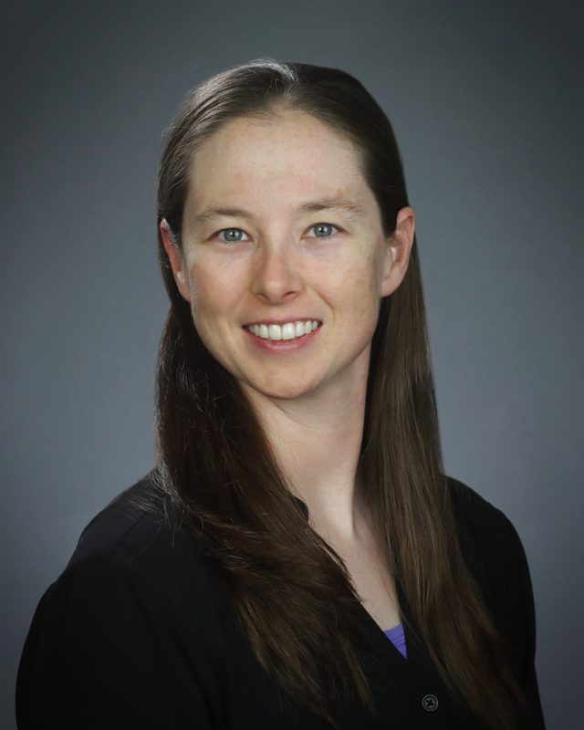
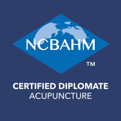

Downtown Flagstaff · With Amber Smith, L.Ac.
Acupuncture in Flagstaff
Acupuncture is one branch of Traditional Chinese Medicine, a complete system of care that looks at the whole person and how every part of your life connects. Amber Smith, L.Ac. practices Traditional Chinese Medicine in downtown Flagstaff at Barefoot Sage Center. She holds a Master of Acupuncture and a degree in molecular and cellular biology, and brings about twelve years in emergency medicine to this work.
If you are ready to take a step in a new direction for your health, this is a good place to start.

What people come in for
People visit for many reasons, including:
- Back pain
- Neck and shoulder pain
- Foot pain
- Joint pain
- Headaches
- Sleep issues
- Stress and overwhelm
- Muscle tension
- Digestive discomfort
- Menstrual discomfort
- Recovery after injury
What a treatment is
Fine, single use needles are placed at specific points and left in while you rest. Each needle is solid and about the width of a hair. Most people feel a mild, dull heaviness or a gentle warmth around the needle, then settle in. Some people fall asleep, and others drift into deep relaxation. Both are part of the treatment.
The points follow a system developed and refined over more than two thousand years. Which points to use, how deep, and how many is the clinical judgment Amber trained for, and it changes from visit to visit as you do.
Electroacupuncture, cupping, gua sha, hot and cold stone, red light therapy or ear seeds may be used when indicated. Not every modality is used in every visit.

Amber Smith, L.Ac.
Licensed Acupuncturist, Arizona
NCBAHM Certified Diplomate in Acupuncture
Master of Acupuncture
Degree in molecular and cellular biology
Paramedic and CPR instructor
Meet Amber
I'm Amber Smith, founder of The Rebuild Path and a licensed acupuncturist practicing Traditional Chinese Medicine at Barefoot Sage Center. Across all my work, one question keeps guiding me: what can help this person move forward from where they are right now?
That question has taken me from emergency care as a paramedic to teaching CPR, practicing acupuncture, and creating guided workbooks for personal reflection. My training in molecular and cellular biology and my years in emergency medicine shape the curiosity and attention I bring to every treatment.
I enjoy making complicated things understandable. In acupuncture, that starts with listening to what you're experiencing, how it affects your day, and what you'd like to be able to do or feel differently.
What I love most is building a relationship over time: learning what matters to you, noticing changes together, and adjusting care along the way. My goal is to help you understand your body and feel confident taking an active role in your own well-being.
Visits
Initial Visit
90 minutes
A full history, a real conversation, then your first treatment. Your treatment is built around what your body needs that day. Wear loose, comfortable clothing that rolls up easily above the knees and elbows, and please arrive 30 minutes early to complete your new patient paperwork.
Return Visit
60 minutes
A short check in on how you have felt since your last treatment and what has shifted, then the session is adjusted to match.
Couples Acupuncture, Initial Visit
150 minutes for two
Experience acupuncture with someone you love, treated side by side in the same room by one practitioner. Book this visit when either of you is new to the practice. Each person completes their own paperwork here, so please arrive 1 hour early. If something comes up that you would rather discuss privately, just say so.
Couples Acupuncture, Return Visit
75 minutes for two
Together, for two returning patients. A short check in for each person, then treatment adjusted to what each of you needs that day.
Please give at least 24 hours notice to cancel or reschedule.
Not sure which visit is yours? Call (928) 444 9411.
Find us
Barefoot Sage Center
14 E Birch Ave
Flagstaff, AZ 86001
Downtown, one block off Route 66.
Payment at your visit. No card needed to book.
Hours
| Wednesday | 10 am to 7 pm |
| Thursday to Saturday | 10 am to 8 pm |
| Sunday | 10 am to 5 pm |
| Monday and Tuesday | Closed |
Appointments outside these hours may be available on request. Call (928) 444 9411.